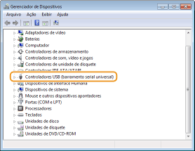
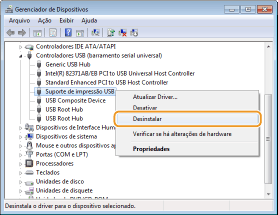
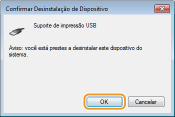

0KUF-00F
Apague o driver classe USB se não conseguir instalar o driver de impressora corretamente utilizando uma conexão USB. Observe que, mesmo se o driver classe USB for apagado, ele será reinstalado automaticamente quando a impressora for conectada ao computador por um cabo USB.
1
Conecte a impressora ao computador usando um cabo USB (Conectando via USB) e ligue a impressora.
2
Faça o login no computador com uma conta de administrador.
3
Exibe o [Gerenciador de dispositivos]. Exibição do [Gerenciador de dispositivos].
4
Clique duas vezes em [Controladores USB (barramento serial universal)].

5
Clique com o botão direito em [Suporte de impressão USB] e depois em [Desinstalar].


Tenha cuidado e apague apenas o [Suporte de impressão USB] e não os outros dispositivos ou drivers de dispositivos
Se outros dispositivos ou drivers forem apagados, o Windows pode não funcionar corretamente.

Se [Suporte de impressão USB] não for exibido
O [Suporte de impressão USB] não será exibido se o driver classe USB não estiver instalado corretamente. Nesse caso, feche o [Gerenciador de dispositivos] e não faça mais nada.
6
Clique em [OK].

7
Feche o [Gerenciador de dispositivos].
8
Desconecte o cabo USB e reinicie o computador.